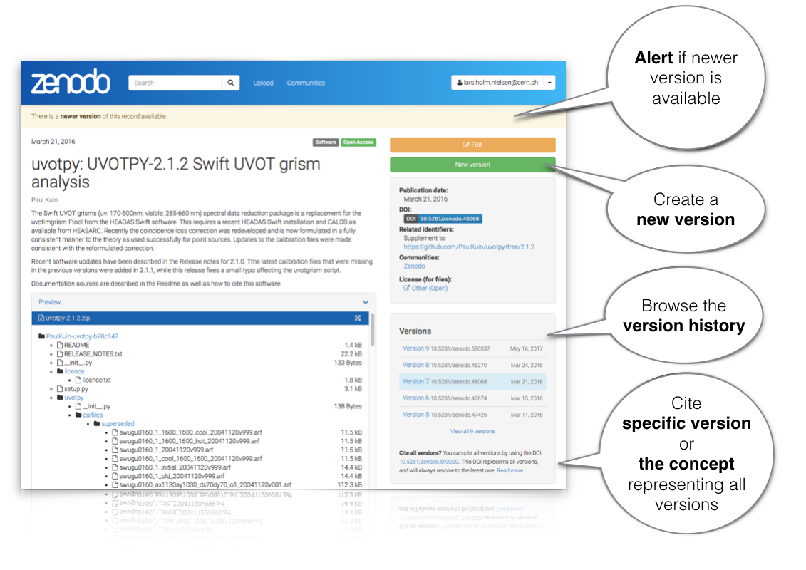

Zenodo now supports DOI versioning!
by
 Lars Holm Nielsen
on May 30, 2017
Lars Holm Nielsen
on May 30, 2017
We are pleased to announce the launch of DOI versioning support in Zenodo - the open research repository from OpenAIRE and CERN. This new feature enables users to update the record’s files after they have been made public and researchers to easily cite either specific versions of a record or to cite, via a top-level DOI, all the versions of a record.
DOI versioning support was one of our most requested features for Zenodo, and it has been co-developed by OpenAIRE’s Zenodo team and EUDAT’s B2SHARE team as an extension module for CERN’s Invenio digital repository platform, which powers both Zenodo and B2SHARE.
This update comes hot on the heels of the recent relaunch which made Zenodo faster, improved GitHub integration, integrated support for Horizon 2020 grant information, and enabled 50 gigabyte uploads!
Read more about the inner workings of new feature in the DOI Versioning FAQ.

Join Zenodo at Google Summer of Code 2017
by
 Krzysztof Nowak
on March 10, 2017
Krzysztof Nowak
on March 10, 2017
We are happy to announce that Zenodo has been accepted as a mentoring organisation for Google Summer of Code 2017!
It's a great opportunity for university students to contribute to Zenodo and make an impact on Open Science. By applying with us you will be able to work on several projects such as public researcher profiles, research data metadata extraction, spam filtering (using machine learning!) and more.
See our full list of project ideas.
What is Google Summer of Code (GSoC)?
GSoC involves a remote, full-time software development work for three months during summer. An exempt from the official GSoC page:
"Google Summer of Code is a global program focused on introducing students to open source software development. Students work on a 3 month programming project with an open source organization during their break from university."
(...)
"As a part of Google Summer of Code, student participants are paired with a mentor from the participating organizations, gaining exposure to real-world software development and techniques. Students have the opportunity to spend the break between their school semesters earning a stipend while working in areas related to their interests. In turn, the participating organizations are able to identify and bring in new developers who implement new features and hopefully continue to contribute to open source even after the program is over. Most importantly, more code is created and released for the use and benefit of all."
More information on the official GSoC page.
Who can take part?
In short, university students from accredited universities that are at least 18 years of age and eligible to work in their country. Full conditions can be found in the GSoC FAQ under "What are the eligibility requirements for participation?".
Since Zenodo is a web platform, a good knowledge of Python, web development, relational databases and object oriented programming is required if you want to apply with us.
When does it start?
It has already started! You still have time until 3rd of April to submit a proposal with us, but if you're considering applying, you should start getting familiar our project as soon as possible. This will increase your chances of being selected! See the GSoC Timeline.
Interested?
Take a look at our organization profile page and find more information on how to apply on our GSoC Wiki!
The Zenodo Blog has landed!
by
 Lars Holm Nielsen
on February 28, 2017
Lars Holm Nielsen
on February 28, 2017
After a week-long sprint, we have the pleasure to present the new look-and-feel for Zenodo documentation as well as introduce the Zenodo Blog. From now on, in addition to broadcasting on Twitter @zenodo_org, all major announcements will also happen on this blog. We have also launched four new sub-domains, which topically separate the content into:
- blog.zenodo.org - Blog with major announcements and articles written by our team members.
- developers.zenodo.org - Refreshed REST API documentation.
- help.zenodo.org - Help pages with FAQ and features showcase.
- about.zenodo.org - General information as well as terms of use, policies and contact information.
During the spring we will gradually be launching new content on these pages so stay tuned. Write you soon!